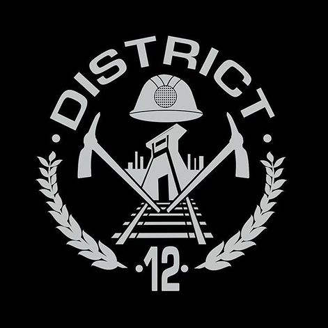

Peeta Mellark
El tributo del Distrito 12 cuya empatía y valentía desafían las reglas de los Juegos.

El tributo del Distrito 12 cuya empatía y valentía desafían las reglas de los Juegos.
Una arquera decidida que se convierte en el rostro de la resistencia contra el Capitolio.
El líder del Capitolio, dispuesto a usar el miedo y el poder para conservar su dominio.
En un futuro distópico, Panem está dividido en 12 distritos bajo el control del Capitolio. Cada año, dos jóvenes de cada distrito son elegidos para participar en los Juegos del Hambre, una competencia a muerte transmitida para todo el país.
La historia sigue a Katniss Everdeen, quien se ofrece como voluntaria para proteger a su hermana y termina convirtiéndose en el símbolo de una rebelión contra el Capitolio.
A lo largo de la saga, Katniss y sus aliados enfrentan los Juegos, la guerra y las consecuencias de desafiar al poder, mientras luchan por recuperar la libertad de los distritos.

Conocido por sus minas de carbón, el Distrito 12 es uno de los más pobres de Panem. A pesar de las dificultades, sus habitantes se caracterizan por su fortaleza y resistencia. Es el hogar de Katniss Everdeen y Peeta Mellark, quienes son elegidos para representar al distrito en los Juegos del Hambre.
Conocé los demás distritos